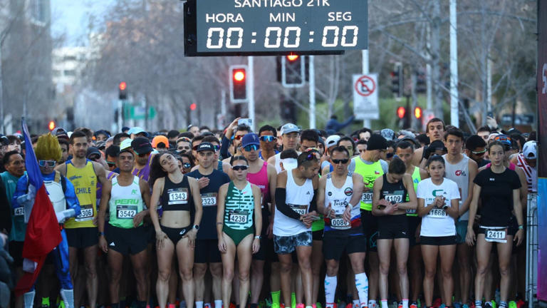
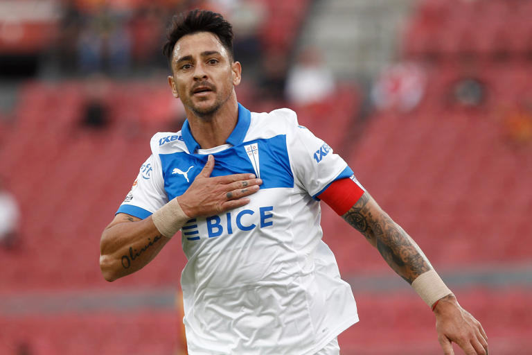
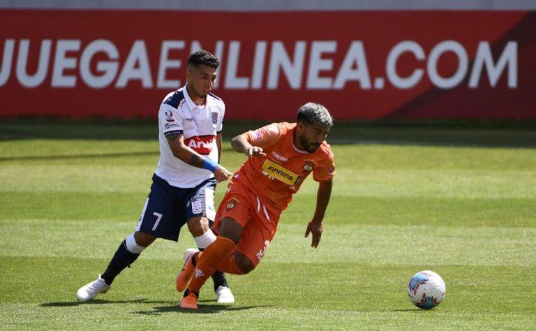

| Imagen | Título | Categoría | Descripción |
|---|---|---|---|
|  | ¿Qué calles estarán cerradas este domingo por la corrida STGO21K? | Deporte |
Desde las 6:30 horas, más de tres mil corredores inscritos participarán en el evento STGO 21K... |
|  | La reacción de Zampedri tras enterarse que Gareca se queda en La Roja | Deporte |
Fernando Zampedri, delantero de Universidad Católica, habló sobre su reciente paso por la selección chilena... |
|  | Nicolás Maturana remece el mercado de fichajes | Deporte |
El volante ofensivo Nicolás Maturana finalmente encontró club tras su experiencia en San Antonio Unido... |